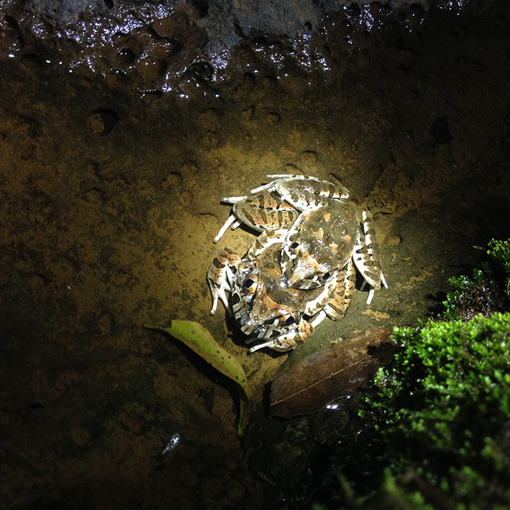
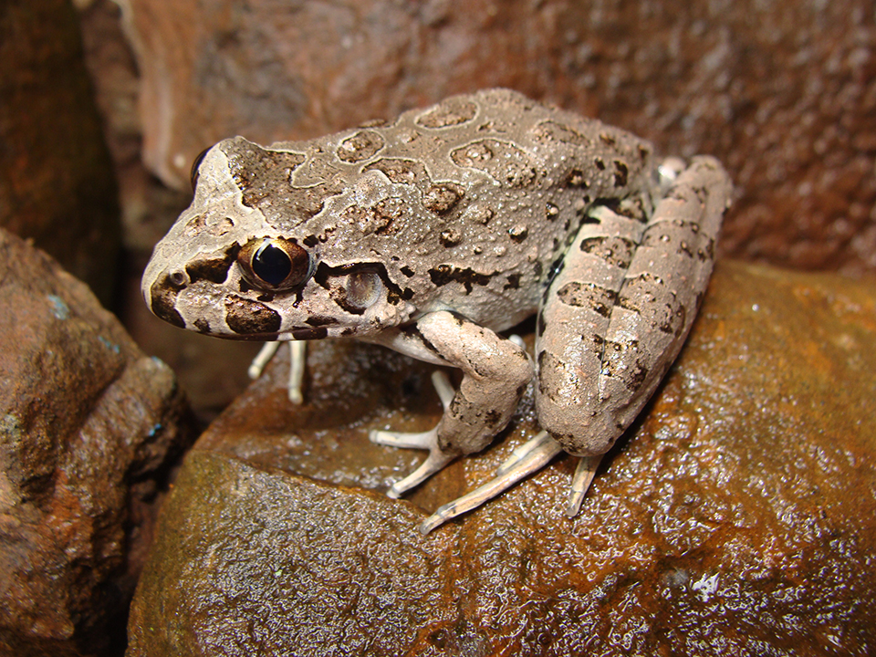
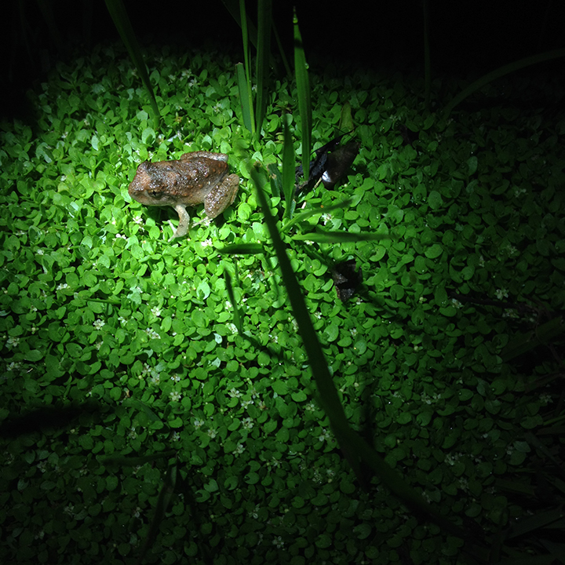
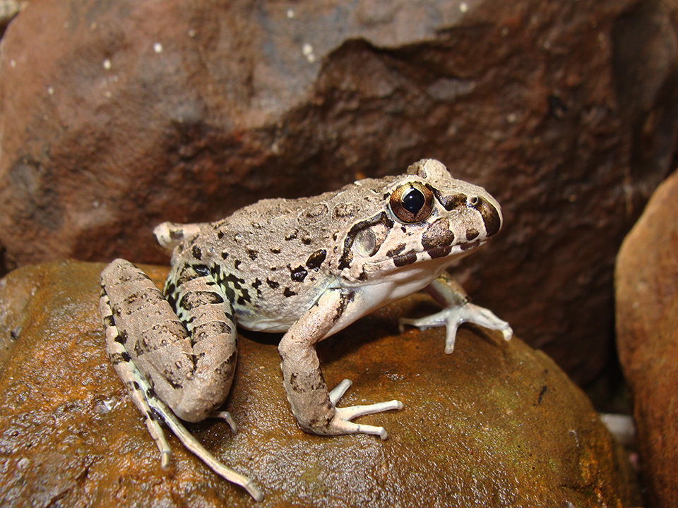
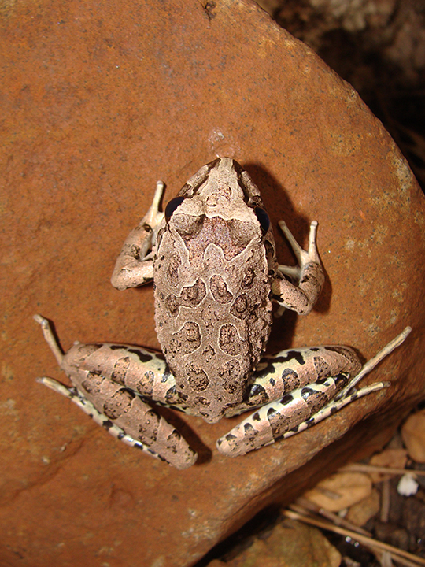

Sua pele é coberta por verrugas, as costas são de castanhas a cinza e as pernas podem ser alaranjadas ou esverdeadas. Algumas tem manchas escuras arredondadas nas pernas, braços, lábio e costas. A pupila é vertical e os olhos podem ser prateados, dourados ou cobre. Vive entre as rochas, associada aos leitos de rios em ambientes florestados. Os machos vocalizam sobre as pedras e os ovos são colocados em poças temporárias nas margens ou no percurso dos rios, quando estes diminuem de volume. Não possui veneno. Está distribuída pelo noroeste da Argentina, Paraguai, Uruguai e no Brasil os estados do Rio Grande do Sul, Santa Catarina e Paraná. Ainda há muito a se conhecer sobre a espécie.
    